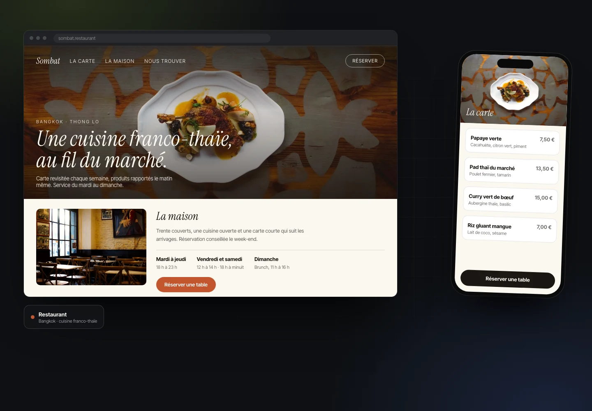

Meen, boutique beauté et contenu SEO automatisé
Marque de soin capillaire : boutique en ligne complète, du thème sur mesure jusqu'à la production de contenu.
Projet client
Un site qui vous ressemble, qui charge instantanément et qui donne envie de vous écrire. Pas un template acheté et rempli à la hâte : une structure pensée pour votre activité et écrite à la main.

Exemples d'interfaces conçus pour la démonstration. Les noms et les enseignes sont fictifs.
Des projets réels, avec leur contexte et leur statut. Rien n'est mis en scène.
Marque de soin capillaire : boutique en ligne complète, du thème sur mesure jusqu'à la production de contenu.

Une présence en ligne pour un artiste-musicien : dates, univers visuel, extraits audio et vidéo, contact booking.


Cinq sites, cinq univers graphiques : chaque personne devait avoir une présence en ligne qui lui ressemble, pas un template dupliqué.
Décrivez-le en quelques lignes. Vous recevez sous 24 h un avis honnête, un délai et un prix fixe, sans engagement.